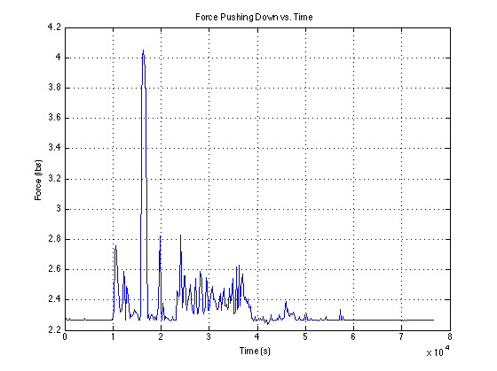
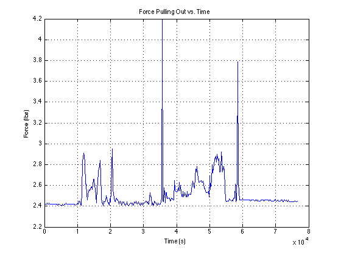
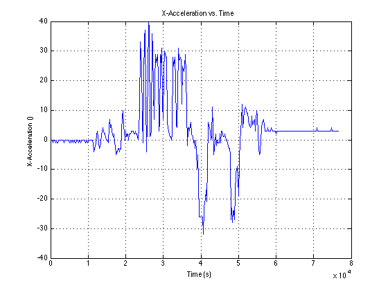
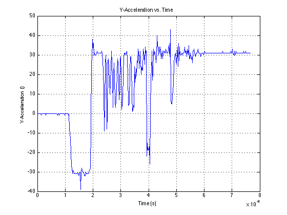
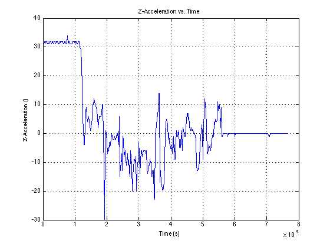

clear all;clc;
[file, path] = uigetfile('*.TXT','Select the Data File');
filename = strcat(path, file);
LENGTH_BTWN_FSR = 4;
LOCK_FSR_TOP_LENGTH = 1.5;
LOCK_FSR_SIDE_LENGTH = 1.6;
G_TO_FT_PER_SEC_SQUARED = 32.17;
IN_TO_FT = 0.0833;
file = fopen(filename);
intro = textscan(file,'%s',1,'Delimiter','\n');
header = intro{1};
input = textscan(file, '%d%f%f%f%f%f%f%f', 'Delimiter', ',');
fclose(file);
time = input{1};
force1 = input{2};
force2 = input{3};
force3 = input{4};
force4 = input{5};
xAccel = input{6};
yAccel = input{7};
zAccel = input{8};
force1Count = 1;
force2Count = 1;
xAccelCount = 1;
yAccelCount = 1;
zAccelCount = 1;
maxXAccel = 0;
maxYAccel = 0;
maxZAccel = 0;
sumOfXAccel = 0;
sumOfYAccel = 0;
sumOfZAccel = 0;
for i=1:length(force1)
if force1(i) >= 0 && force2(i) >= 0
modifiedForce1(force1Count) = force1(i);
modifiedForce2(force1Count) = force2(i);
modifiedTime1(force1Count) = time(i);
pushingDownDistance(force1Count) = (force2(i) * LENGTH_BTWN_FSR) / (force1(i) + force2(i));
force1Count = force1Count + 1;
modifiedXAccel(xAccelCount) = xAccel(i);
xAccelTime(xAccelCount) = time(i);
modifiedYAccel(yAccelCount) = yAccel(i);
yAccelTime(yAccelCount) = time(i);
modifiedZAccel(zAccelCount) = zAccel(i);
zAccelTime(zAccelCount) = time(i);
if xAccel(i) > maxXAccel
maxXAccel = xAccel(i);
end
if yAccel(i) > maxYAccel
maxYAccel = yAccel(i);
end
if zAccel(i) > maxZAccel
maxZAccel = zAccel(i);
end
sumOfXAccel = sumOfXAccel + xAccel(i);
xAccelCount = xAccelCount + 1;
sumOfYAccel = sumOfYAccel + yAccel(i);
yAccelCount = yAccelCount + 1;
sumOfZAccel = sumOfZAccel + zAccel(i);
zAccelCount = zAccelCount + 1;
end
if force3(i) >= 0 && force4(i) >= 0
modifiedForce3(force2Count) = force3(i);
modifiedForce4(force2Count) = force4(i);
modifiedTime2(force2Count) = time(i);
pullingOutDistance(force2Count) = (force4(i) * LENGTH_BTWN_FSR) / (force3(i) + force4(i));
force2Count = force2Count + 1;
end
end
avgXAccel = sumOfXAccel / xAccelCount;
avgYAccel = sumOfYAccel / yAccelCount;
avgZAccel = sumOfZAccel / zAccelCount;
pushingForce = modifiedForce1 + modifiedForce2;
pushingTorque = pushingForce * (LOCK_FSR_TOP_LENGTH);
maxPushingForce = 0;
sumOfPushingForce = 0;
maxPushingDistance = 0;
sumOfPushingDistance = 0;
pushingForceCount = 0;
maxPushingTorque = 0;
sumOfPushingTorque = 0;
for i=1:length(pushingForce)
if pushingForce(i) > maxPushingForce
maxPushingForce = pushingForce(i);
end
if pushingDownDistance(i) > maxPushingDistance
maxPushingDistance = pushingDownDistance(i);
end
if pushingTorque(i) > maxPushingTorque
maxPushingTorque = pushingTorque(i);
end
sumOfPushingTorque = sumOfPushingTorque + pushingTorque(i);
sumOfPushingDistance = sumOfPushingDistance + pushingDownDistance(i);
sumOfPushingForce = sumOfPushingForce + pushingForce(i);
pushingForceCount = pushingForceCount + 1;
end
averagePushingForce = sumOfPushingForce / pushingForceCount;
averagePushingDistance = sumOfPushingDistance / pushingForceCount;
averagePushingTorque = sumOfPushingTorque / pushingForceCount;
pullingForce = modifiedForce3 + modifiedForce4;
pullingTorque = pullingForce * (LOCK_FSR_SIDE_LENGTH);
maxPullingForce = 0;
sumOfPullingForce = 0;
maxPullingDistance = 0;
sumOfPullingDistance = 0;
maxPullingTorque = 0;
sumOfPullingTorque = 0;
pullingForceCount = 0;
for i=1:length(pullingForce)
if pullingForce(i) > maxPullingForce
maxPullingForce = pullingForce(i);
end
if pullingOutDistance(i) > maxPullingDistance
maxPullingDistance = pullingOutDistance(i);
end
if pullingTorque(i) > maxPullingTorque
maxPullingTorque = pullingTorque(i);
end
sumOfPullingTorque = sumOfPullingTorque + pullingTorque(i);
sumOfPullingDistance = sumOfPullingDistance + pullingOutDistance(i);
sumOfPullingForce = sumOfPullingForce + pullingForce(i);
pullingForceCount = pullingForceCount + 1;
end
averagePullingForce = sumOfPullingForce / pullingForceCount;
averagePullingDistance = sumOfPullingDistance / pullingForceCount;
averagePullingTorque = sumOfPullingTorque / pullingForceCount;
figure(1)
plot(modifiedTime1, pushingForce)
xlabel('Time (s)')
ylabel('Force (lbs)')
title('Force Pushing Down vs. Time');
grid on;
figure(2)
plot(modifiedTime2, pullingForce)
xlabel('Time (s)')
ylabel('Force (lbs)')
title('Force Pulling Out vs. Time');
grid on;
figure(3)
plot(xAccelTime, modifiedXAccel)
xlabel('Time (s)')
ylabel('X-Acceleration ()')
title('X-Acceleration vs. Time');
grid on;
figure(4)
plot(yAccelTime, modifiedYAccel)
xlabel('Time (s)')
ylabel('Y-Acceleration ()')
title('Y-Acceleration vs. Time');
grid on;
figure(5)
plot(zAccelTime, modifiedZAccel)
xlabel('Time (s)')
ylabel('Z-Acceleration ()')
title('Z-Acceleration vs. Time');
grid on;
fprintf('\t=============================')
fprintf('\n\tPulling Down on Handle:\n')
fprintf('\t=============================\n')
fprintf('\tAverage Force = %.2f Lbs\n', averagePushingForce);
fprintf('\tMaximum Force = %.2f Lbs\n', maxPushingForce);
fprintf('\tAverage Distance = %.2f in\n', averagePushingDistance);
fprintf('\tMaximum Distance = %.2f in\n', maxPushingDistance);
fprintf('\tAverage Torque = %.2f Lbs-in\n', averagePushingTorque);
fprintf('\tMaximum Torque = %.2f Lbs-in\n', maxPushingTorque);
fprintf('\n\n');
fprintf('\t=============================')
fprintf('\n\tPushing Out on Handle:\n')
fprintf('\t=============================\n')
fprintf('\tAverage Force = %.2f Lbs\n', averagePullingForce);
fprintf('\tMaximum Force = %.2f Lbs\n', maxPullingForce);
fprintf('\tAverage Distance = %.2f in\n', averagePullingDistance);
fprintf('\tMaximum Distance = %.2f in\n', maxPullingDistance);
fprintf('\tAverage Torque = %.2f Lbs-in\n', averagePullingTorque);
fprintf('\tMaximum Torque = %.2f Lbs-in\n', maxPullingTorque);
fprintf('\n\n');
fprintf('\t=============================')
fprintf('\n\tAccelerations:\n')
fprintf('\t=============================\n')
fprintf('\tAverage X Accel = %.2f ft/s^2\n', avgXAccel);
fprintf('\tMaximum X Accel = %.2f ft/s^2\n', maxXAccel);
fprintf('\tAverage Y Accel = %.2f ft/s^2\n', avgYAccel);
fprintf('\tMaximum Y Accel = %.2f ft/s^2\n', maxYAccel);
fprintf('\tAverage Z Accel = %.2f ft/s^2\n', avgZAccel);
fprintf('\tMaximum Z Accel = %.2f ft/s^2\n', maxZAccel);
=============================
Pulling Down on Handle:
=============================
Average Force = 2.34 Lbs
Maximum Force = 4.05 Lbs
Average Distance = 1.18 in
Maximum Distance = 1.53 in
Average Torque = 3.51 Lbs-in
Maximum Torque = 6.07 Lbs-in
=============================
Pushing Out on Handle:
=============================
Average Force = 2.51 Lbs
Maximum Force = 4.20 Lbs
Average Distance = 1.16 in
Maximum Distance = 1.80 in
Average Torque = 4.01 Lbs-in
Maximum Torque = 6.72 Lbs-in
=============================
Accelerations:
=============================
Average X Accel = 3.09 ft/s^2
Maximum X Accel = 40.00 ft/s^2
Average Y Accel = 16.68 ft/s^2
Maximum Y Accel = 43.00 ft/s^2
Average Z Accel = 3.53 ft/s^2
Maximum Z Accel = 34.00 ft/s^2
    